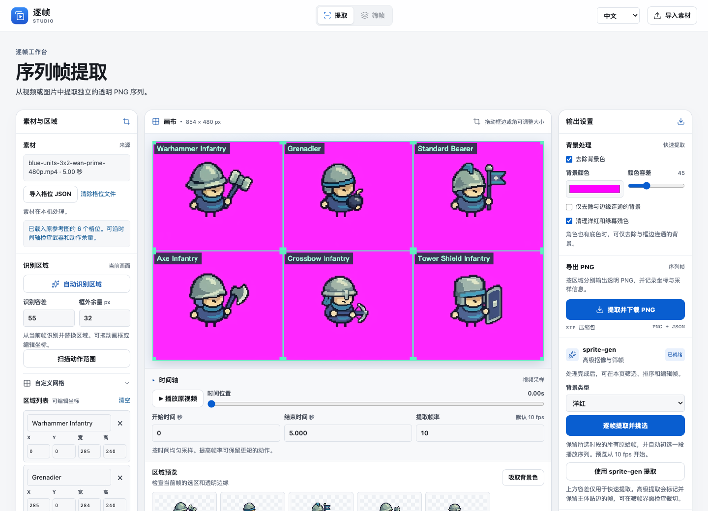
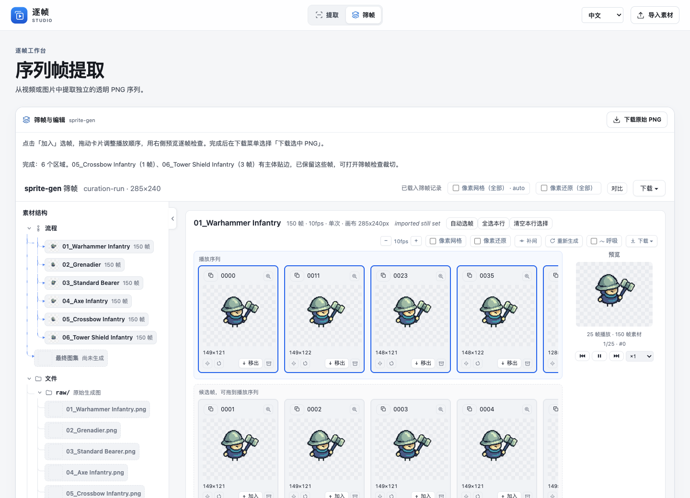
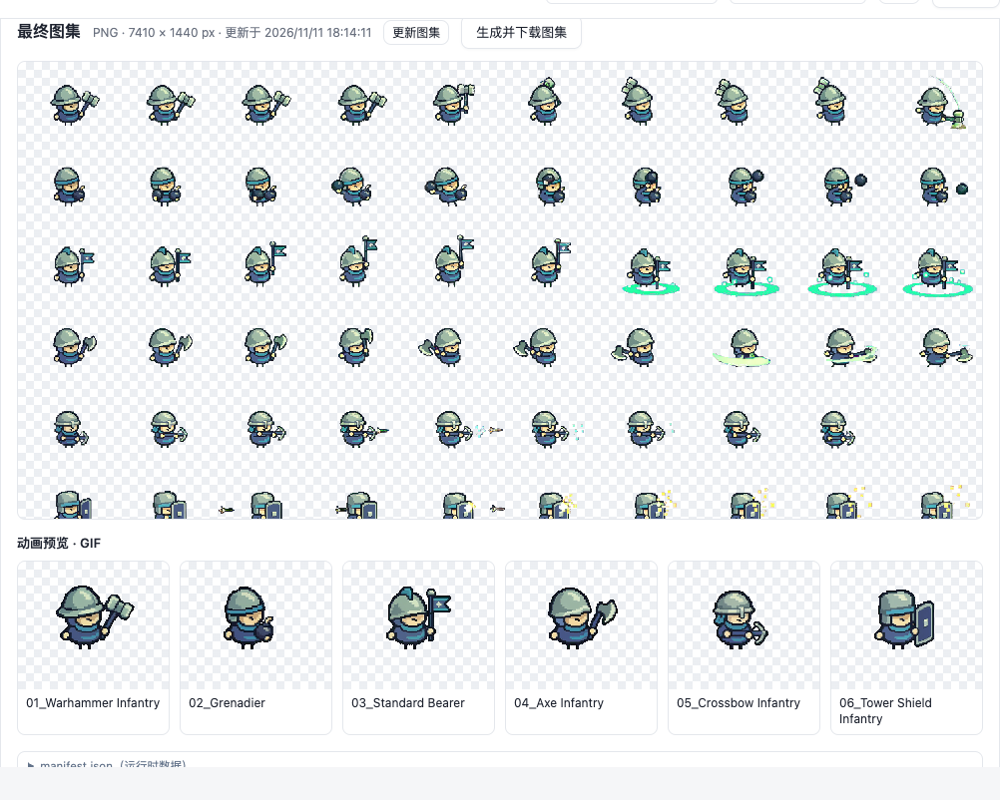
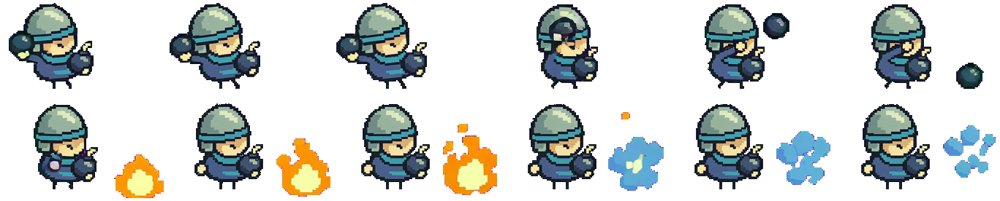
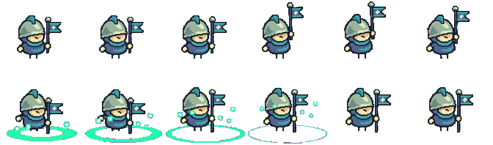
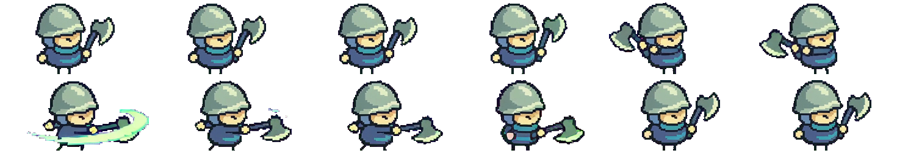
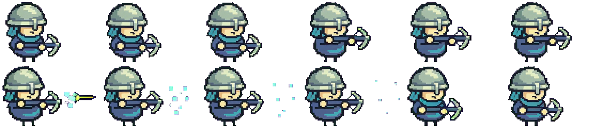
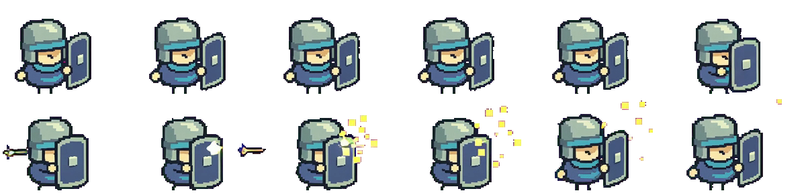

战锤兵


像素素材工坊仓库已内置 SpriteFrame。可以按格裁切和抠像、逐帧检查动作，并导出 PNG、图集和 GIF。
项目 ZIP 内含 SpriteFrame、示例 MP4 和配套格位，无需登录 GitHub 即可下载。
brew install ffmpeg。Ubuntu 或 Debian 上可运行 sudo apt install python3 python3-venv ffmpeg，并用 python3 --version 确认版本至少为 3.11。pixel-asset-workshop-main 文件夹打开终端，运行以下命令。
sh workbench/setup.sh
sh workbench/start.sh


每套精灵图和 GIF 使用同一组 12 帧。精灵图按从左到右、从上到下排列，GIF 每帧播放 200 毫秒。
这些原创精灵图和 GIF 可用于个人或商业项目，可修改和分享，署名自愿。 CC0 1.0 授权说明 ↗




